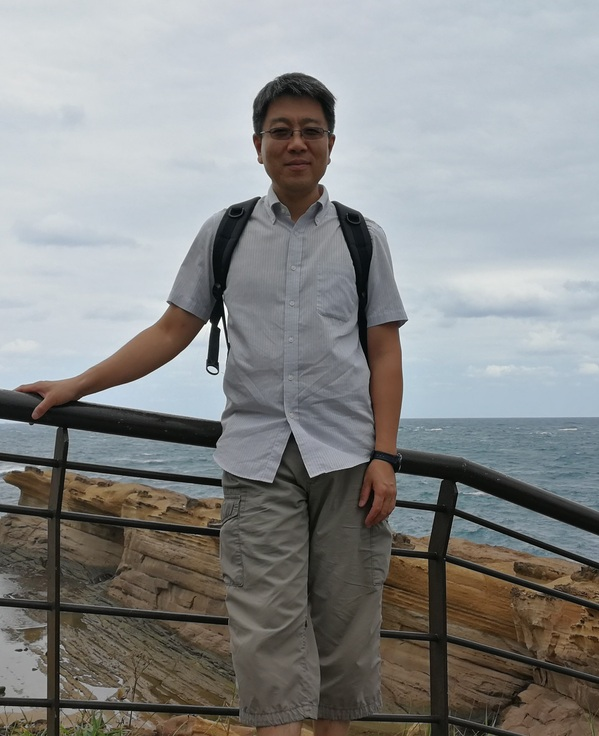

FACULTY
Hanli Wang
Faculty profile
The following is an original-site snapshot. Current roles, counts and contact details need review by the lab.

Hanli Wang received the B.S. and M.S. degrees in Electrical Engineering from Zhejiang University, Hangzhou, China, in 2001 and 2004, respectively, and the Ph.D. degree in Computer Science from City University of Hong Kong, Kowloon, Hong Kong, in 2007. From 2007 to 2008, he was a Research Fellow with the Department of Computer Science, City University of Hong Kong. From 2007 to 2008, he was also a Visiting Scholar with Stanford University, Palo Alto, CA. From 2008 to 2009, he was a Research Engineer with Precoad, Inc., Menlo Park, CA. From 2009 to 2010, he was an Alexander von Humboldt Research Fellow in University of Hagen, Hagen, Germany. He is currently a full Professor with the Department of Computer Science and Technology, Tongji University, Shanghai, China. From May 2011 to July 2016, he was the Department Associate Head. Since December 2020, he has been the Deputy director of College Committee, College of Electronic and Information Engineering, Tongji University. He has published 170+ research papers including 40+ IEEE Transactions journal papers, and filed 50+ invention patents with 20 authorized. He successfully led or played a significant role in 20+ research projects, including National Natural Science Foundation of China, National Key Research and Development Program of China, Key Project of Science and Technology Innovation 2030 supported by the Ministry of Science and Technology of China, Shanghai Innovation Action Project of Science and Technology, Program for New Century Excellent Talents in University of China, “Shu Guang” project of Shanghai Municipal Education Commission and Shanghai Education Development Foundation, Program for Professor of Special Appointment (Eastern Scholar) at Shanghai Institutions of Higher Learning, Shanghai Pujiang Program, Alexander von Humboldt Foundation of Germany, RGC General Research Fund (GRF) of Hong Kong, etc. His current research interests include computer vision, multimedia signal processing, machine learning. He is an IEEE senior member, a member of Humboldt Foundation, an Outstanding member of Chinese Computer Federation (CCF) and a life member of Asia-Pacific Signal and Information Processing Association (APSIPA).
Education
- 2004.08-2007.07: — Doctor of Philosophy (Ph.D.) Department of Computer Science, City University of Hong Kong, Hong Kong, China GPA:4.3/4.3 (100/100) Thesis:“Optimization of Video Encoding for Computational Complexity Reduction and Performance Improvement” with Outstanding Research Thesis Award Supervisor: Prof. Sam Kwong
- 2001.09-2004.03: — Master of Engineering (M.E.) College of Electrical Engineering, Zhejiang University, Hangzhou, China GPA:3.96/4.0 (93.13/100) Thesis:“Multiple Objective Evolutionary Algorithm for Interpretable Fuzzy System Construction” Supervisor: Prof. Wei Wei
- 1997.09-2001.06: — Bachelor of Engineering (B.E.) College of Electrical Engineering, Zhejiang University, Hangzhou, China GPA:3.89/4.0 (90.59/100)
- 1998.09-2001.06: — Advanced Honor Class of Engineering Education Chu KeChen Honors College, Zhejiang University, Hangzhou, China
Experiences
- 2010.07-Present: — Professor, Doctoral Supervisor Department of Computer Science and Technology, College of Electronics and Information Engineering, Tongji University
- 2011.05-2016.07: — Associate Head Department of Computer Science and Technology, Tongji University, Shanghai, China
- 2011.11-2016.07: — Director Computer Science and Technology Lab, Tongji University, Shanghai, China
- 2017.12-Present: — Deputy Director Shanghai Industrial Visual Perception and Intelligent Computing Engineering Technology Research Center
- 2018.01-2019.12: — Group Leader Tongji University Zhejiang Province Admissions Group
- 2011.05-2016.07: — Deputy Director of Department, Director of Computer Laboratory (concurrently) Department of Computer Science and Technology, College of Electronics and Information
- 2009.03-2010.04: — Alexander von Humboldt Research Fellow Faculty of Mathematics and Computer Science, University of Hagen, Hagen, Germany Host: Prof. Dr. Dr. Wolfgang A. Halang
- 2008.11-2009.02: — Software Engineer Precoad Inc., Menlo Park, CA, USA
- 2007.11-2008.08: — Visiting Scholar Department of Statistics, Stanford University, CA, USA Host: Prof. Charles K. Chui
- 2007.11-2008.11: — Research Fellow Department of Computer Science, City University of Hong Kong, Hong Kong, China Host: Prof. Sam Kwong
- 2007.09-2007.10: — Senior Research Associate Department of Computer Science, City University of Hong Kong, Hong Kong, China Host: Prof. Sam Kwong
- 2004.08-2004.07: — Teaching Assistant Department of Computer Science, City University of Hong Kong, Hong Kong, China
- 2004.04-2004.07: — Intern Digital Manufacturing Lab, GE Global Research-Shanghai, Shanghai, China
- 2003.12-2004.03: — Research Assistant Department of Computer Science, City University of Hong Kong, Hong Kong, China Host: Prof. Sam Kwong
Honors and Awards
- 2017.10: — Honorable Mention Award in ACMMM’17 Microsoft Research Video to Language Challege
- 2016.08: — National Natural Science Funds for Excellent Young Scholar
- 2015.07: — Professor of Special Appointment (Eastern Scholar) at Shanghai Institutions of Higher Learning (2nd Stage)
- 2013.01: — Shanghai Shuguang (Dawn) Scholar
- 2011.08: — Shanghai Pujiang Scholar
- 2011.05: — New Century Excellent Talents in University of China
- 2010.12: — Professor of Special Appointment (Eastern Scholar) at Shanghai Institutions of Higher Learning
- 2008.03: — Alexander von Humboldt Research Fellowship
- 2017.09: — Best Paper Nomination Award of the First China Multimedia(CHINAMM2017)
- 2015.08: — Best Paper Award of CHINACOM2015
- 2015.09: — Best Paper Nomination Award of the 24th National Conference on Multimedia Technology (NCMT2015)
Conference
- 2019.07: — Local Chair, 2019 IEEE International Conference on Multimedia & Expo (ICME 2019), Shanghai, China, Outstanding Service Award
- 2018.09: — Session Chair, 2018 IEEE International Conference on Multimedia Big Data (BigMM 2018), Xi’an, China
- 2018.08: — Session Chair, 2018 International Conference on Intelligence Science and Big Data Engineering (IScIDE 2018), Lanzhou, China
- 2018.01: — Session Chair, 2018 IEEE International Conference on Big Data and Smart Computing (BigComp 2018), Shanghai, China
- 2017.09: — Session Chair, 2017 IEEE International Conference on Image Processing (ICIP 2017), Beijing, China
- 2017.05: — Program Committee Chair, The ACM Turing 50th Celebration Conference -China (ACM TURC 2017) SIGAI CHINA Symposium, Shanghai, China
- 2016.09: — Task Organizer, MediEval Benchmarking Initiative for Multimedia Evaluation - The 2016 Predicting Media Interestingness Task, Hilversum, Netherlands
- 2016.09: — Local Chair, Recent Advances on Computer Vision (RACV2016), Shanghai, China
- 2016.08: — Session Chair, The 25th National Conference on Multimedia Technology (NCMT2016)
- 2015.10: — Publicity Chair, 2015 IEEE International Conference on Systems, Man, and Cybernetics (SMC2015), Hong Kong, China
- 2015.09: — Task Organizer, MediEval Benchmarking Initiative for Multimedia Evaluation - The 2015 Affective Impact of Movies Task, Wurzen, Germany
- 2015.08: — Session Chair, The 10th International Conference on Communication and Networking in China (CHINACOM 2015), Shanghai, China
- 2015.07: — Tutorial Chair, The 3rd IEEE China Summit & International Conference on Signal and Information Processing (ChinaSIP 2015), Chengdu, China
- 2015.06: — Local Chair, 2015 ACM International Conference on Multimedia Retrieval (ICMR 2015), Shanghai, China
- 2015.04: — Session Chair, The First IEEE International Conference on Multimedia Big Data (BigMM 2015), Beijing, China
- 2014.10: — Publicity Chair, The 9th International Conference on Rough Sets and Knowledge Technology (RSKT 2014), Shanghai, China
Academic
- Associate Editor — IEEE Transactions on Multimedia
- Associate Editor — Information Sciences
- Associate Editor — Electronics Letters
- Senior Member — Institute of Electrical and Electronics Engineers (IEEE)
- Humboldt Member — Alexander von Humboldt Foundation, Germany
- Outstanding Member — China Computer Federation
- The Seventh Council Member — Shanghai Institute of Image Graphics
- Life Member — Asia Pacific Society for Signal and Information Processing (APSIPA)
TONGJI UNIVERSITY · MIC
Get in touch
Learn more about the research and people at MIC.